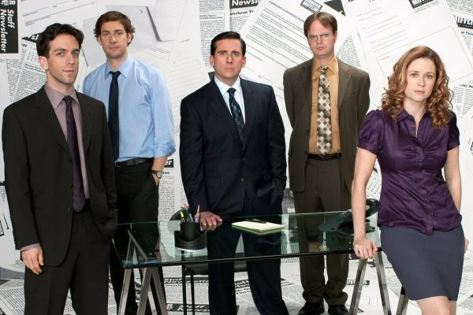

Добро пожаловать на сайт, посвященный сериалу "Офис"
Этот фан-сайт посвященный культовому сериалу "Офис". На этой странице вы найдете краткую информацию о сериале, а также ссылки на другие материалы.
Содержание
О сериале
Сериал "Офис" — это комедийное шоу, которое рассказывает о буднях работников в офисе компании Dunder Mifflin.
Главные персонажи
- Майкл Скотт — директор филиала компании Dunder Mifflin в Скрантоне, штат Пенсильвания
- Дуайт Шрут — неофициальный помощник директора
- Джим Халперт — продавец, влюблен в Пэм
- Пэм Бизли — секретарь и художница
Сезоны
- Сезон 1 (2005 г.)
- Сезон 2 (2005-2006 гг.)
- Сезон 3 (2006-2007 гг.)
- Сезон 4 (2007-2008 гг.)
- Сезон 5 (2008-2009 гг.)
- Сезон 6 (2009-2010 гг.)
- Сезон 7 (2010-2011 гг.)
- Сезон 8 (2011-2012 гг.)
- Сезон 9 (2012-2013 гг.)
Лучшие серии
- 1 сезон:
- "Пилот"
- "День разнообразия"
- 2 сезон:
- "Рождественская вечеринка"
- "Огненная тревога"
- "Обсуждение эвакуации"
- 3 сезон:
- "Переезд в Стэмфорд"
- "Слияние филиалов"
Содержание
Кадр из сериала

Кликните на миниатюру, чтобы открыть изображение в полном размере (600x400 пикселей) в новой вкладке.